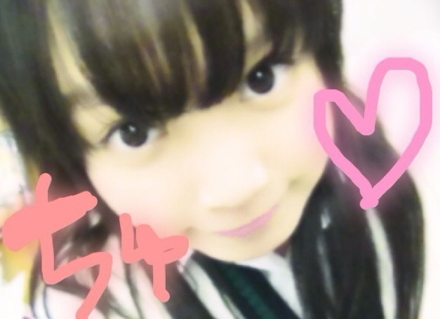
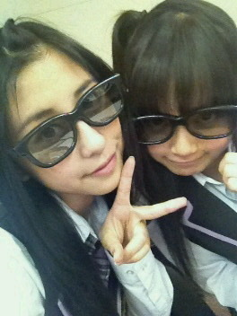
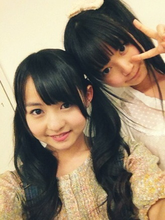
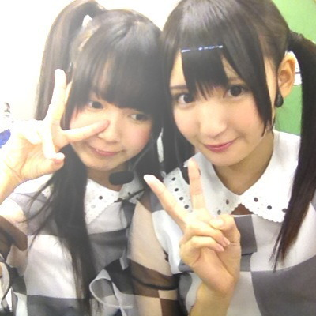

返回列表-BACK TO INDEX

ゆみねえ(岩瀬佑美子chan)遅くなっちゃってごめんね(ノ_;`)
お誕生日おめでとーう!
乃木坂46の一番のお姉さん、ゆみねえさーん。
何気ゆみねえとは何回もお泊まりしたことあったり(^^)
セカンドは選抜で忙しそうな感じだったけど
今まで一緒に行動することが多くて、そのたびに先導してくれるんるん♪
昨日お誕生日会したよ!
 誕生日が6月14日なんですけど祝ってくれますか？？
誕生日が6月14日なんですけど祝ってくれますか？？お誕生日おめでとう!
6月14日ゆーたらひめたんのお友達とおんなじ誕生日よ(*^^*)
今日は、いつも支えてくれる人たちに感謝しながら過ごしましょうね♪
ステキないちねんになりますようにー☆
ごめんねー「その165」飛ばしとったね←
順番前後するけど許してね('・・`)
はーい昨日はスパイダーマンのワールドプレミアに行ってきました!
ひめたんは中継組をつとめたの。
みんな浴衣きれいだったー(*^^*)
浴衣にくもがいるの。スパイダー!!!
それからみんなで24時間番組作り上げましたー
これでまたひとつ乃木坂成長した☆!
これからもみんなで頑張ろうね＼(^O^)／
映画たくさん教えてくれてありがとーう。
今日の質問。
あなたのひめきゅん歴は？
1.乃木坂結成当初から
2.半年くらい前
3.ひめたんビームを浴びてから
4.ひめきゅんじゃない!
 作者の「岡本かの子」が有名な
作者の「岡本かの子」が有名な芸術家の「岡本太郎」の母なのは知らなかったです。(◎o◎)
ほーえー初耳。
ひめたんは岡本太郎さんという方を今初めて知ったけあれじゃけど
芸術家ばっかりの素敵なふぁみりーなのね(*^^*)
 ひめきゅんの加入資格って、なにかありますか？(*^-^*)
ひめきゅんの加入資格って、なにかありますか？(*^-^*)ひめたんにきゅんってした人はみんなひめきゅんさん。
この抑えきれない"好き"という感情、どうすれば良いですか？
叫んでも良いですか？(≧▽≦)
好きならば好きだと言おう!
AKB48さんの原曲も素敵だけれどもやっぱりここは
乃木坂46のマイナーロックバージョンをおっきい声で歌いましょーう。
感情吐き出して今すぐ素直になれっ☆
 コメントさぼってるひめきゅんは分かっちゃう？
コメントさぼってるひめきゅんは分かっちゃう？ひめたんそゆ時の勘は鋭いんだよ(`・ω・')？
あー来てないなあー...ってわかる。寂しくなる。
でも忙しいんかなーって考えたら、わがままは言わないよ？
でも寂しい。
お久しぶりでも覚えてるかな？笑
どこ行っとったのよー
寂しいじゃーん(д)
ひめたん忘れてもいいのー？
ま実際覚えてるけれども♪
今から推しても間に合うかな？
間に合うまにあう(*^^*)
いやむしろひめたん嬉しいよ。きゅん
ありがとーう!
 ひめたん、しばらく俺コメントしていなかったけど、やっぱり心配した？
ひめたん、しばらく俺コメントしていなかったけど、やっぱり心配した？心配したって言ってほしいんでしょー？にやにや
じゃ逆に聞いてみると、心配しすぎて
ひとりで泣いとったらどーするぅー(ノ_;`)？
とかゆって

ひめた〜んハートマークいっぱい使わないほうがいい？
ひめたんのこと好きでしょー？
じゃいっぱい使えしっ(`・ω・')
...ごめんなさい使ってください。ひめたんハート好きだよ。わら。
 最近コメントが雑になりがちで脱字や誤字が多過ぎて反省ばかり。
最近コメントが雑になりがちで脱字や誤字が多過ぎて反省ばかり。それでもひめたん、俺のコメント読んでくれてますか？
疲れてるのに、コメント書いてくれてありがとうございます(*^^*)
そんなになってまで頑張って読んでコメントしてくれてるって聞くと
ひめたんも頑張ってブログ書かなきゃって思う!
よーしっこれからも頑張って日記書くから、頑張ってコメントしてね☆
無理はせんよーうにっ
(*´・ω・*)ひめたん
2012/06/14 07:12｜

あめいずぃーんぐっ
今日の夜はアメイジングスパイダーマンの
試写会と、ワールドプレミア24時間LIVE特番に参加してきました(o>ω<o)
まず試写会ゆーことで、一足お先に6/30公開の
「アメイジングスパイダーマン-ＩＮ ３Ｄ-」を見ましたー
みなさんのお楽しみを奪うようなことあできんけれども
簡単にポイントをお伝えしましょ(*^^*)
まず、３Ｄだから表せるリアルさ!
スパイダーマンが戦いよったら、何かの破片みたいなんが飛んでくるんだけど
まじで自分のとこに飛び散ったみたいで「ビクっ」てなったり
スパイダーマンが高いとこから下を見下ろすアングルが自分の目線みたいで
お腹が冷やっとしたり、感動した(o>ω<o)!
ひめたん３Ｄ初めてだったんだけど、３Ｄ好きになったのよ♪
それから、誰でも楽しめる!
アクション映画って言ったらやっぱ男の子もんなんかなって
ちょっと抵抗があったけど
実際16歳の女の子めっちゃ楽しめました＼(^O^)／
たたかってるシーンはもちろん見ごたえあったけど
やっぱ女の子みんな大好きなロマンスがあったりー
何気ないスクールライフはなんか共感できたりー
普通に女の子同士で見ても楽しめる映画です☆
そして、今までのスパイダーマンシリーズ見たことない人も
おるんじゃないでしょーうか。
この映画でスパイダーマンデビューしても全然問題なーい!
今回、ストーリーが新しくなったみたいよー
ひめたんも今作でスパイダーマンデビューしたんだけど
前回の続きとかないから普通にストーリー楽しかったよ(^O^)☆
そこで今日のしっつもーん
最後にみた映画は?
いつみたのー?
 俺は今日(12日)誕生日だから、ひめたんに祝ってほしいな(*^o^*)
俺は今日(12日)誕生日だから、ひめたんに祝ってほしいな(*^o^*)お誕生日おめでとう!
ケーキに何本ロウソクさしたのよー？にやにや
ひめたんの誕生日のちょうど２ヶ月後ね(^^)
素敵ないちにちになりましたーかな？
 ひめたんホームシックとかならないの?
ひめたんホームシックとかならないの?なりかけたけど、どうにかして立ち直ってきた(^ω^)
だって帰らないってみなさんと約束したんだもん。
 九州だと「片付ける」を「なおす」って言うけど、
九州だと「片付ける」を「なおす」って言うけど、東京では「しまう」って言わないと全く通じないんだよね...
広島あたりではどっちを使ってますか?
なおす。しまう。どっちも使いますねーつかうつかう。
でも、なおすって、方言とかわからんでもなんとなく伝わる気がせん？
ねーどゆことーっ
 あしゅりんに「くたばれ」って言われたとき、ひめたんは何て返したのかしら
あしゅりんに「くたばれ」って言われたとき、ひめたんは何て返したのかしらあしゅはいろんな人に「くたばれ」言いよるけどひめたんだけは例外。
なぜかっちゅーと、目があった瞬間にビームを飛ばすから。言わせないの。わら
ひなに制服あげるんだって?
そよ!
なんかね、ひめたんの中学校の制服が、アニメのコスみたいらしくて
かわごさん(川後陽菜chan)的にツボらしい(ω)☆
んー最近クリーニングからやっと帰ってきたけそろそろ渡さんにゃーねー。
乃木坂になって、初めて話したメンバーって誰?
乃木坂になってってゆーか、結成オーディションの時すでに
ろってぃ(川村真洋chan)
せいたん(畠中清羅chan)
あしゅ(齋藤飛鳥chan)
まあや(和田まあやchan)
ちま(樋口日奈chan)
とかは話してたかな(^^)
 レッスン中の写メとかって怒られるの?練習着とか見てみたい!
レッスン中の写メとかって怒られるの?練習着とか見てみたい!ひめた〜んといくちゃんのツーショットが見たいなぁ〜!
また今度かなりんとの２ショットがあれば載せてほしいなぁ(*´ε｀)人
生駒ちゃんとツーショット希望_(._.)_
たくさんの写めリクエストてーんきゅ＼(^O^)／☆
レッスン中はさすがに怒られるけど、前後なら全然撮れるよ!
でも学校ある日は学校指定のジャージじゃけ可愛くなーい←
今度いつかいい感じの服だったら撮ってみるねー
ご指名いただいたメンバーのみなさーんにお願いして２ショット撮ってくる。
しばしお待ちを!
(*´・ω・*)ひめたん
2012/06/13 00:00｜
世間てのは狭いものでねー
ひめたんの友達の友達がせっちゃん(宮澤成良chan)で
ひめたんの友達の妹の先輩があしゅ(齋藤飛鳥chan)なんとー。
つ、つながったー＼(^O^)／

なかいさん。
中元さんと伊藤さんね。
そういやまりか(伊藤万理華chan)に、ひめたんビームを伝授してーて
頼まれとったのに忘れてた!
まりかーごめんね('・・`)
明日しよ。あした!
昨日は撮影してきたのー
いろんな衣装を着て撮りました。こんな着替えたのは久しぶりな気がするー
詳細は追って発表されると思うから、お楽しみに(^^)
そーしーて今日はダンスレッスンしてきましたー
最近はイベントやテレビ用のダンスの練習ばっかだったけど、
今日は久々に基礎から。
ストレッチ、筋トレ、んでダンスねーっ
やっぱダンス好きよ。
体の細かい動きとか表情とか見よったら、みんなちょっとずつ個性があって
お勉強になるよね(*^^*)
またみなさんの前で踊りたいなーて思いまーしたっ
あと今週末の名古屋の練習もしてきた!
アンケートありがと!
ひめたんはねー日によりけりだけど
たいてい朝はお米食べるかな(*^^*)
お米はお腹にたまるからいいって聞いたことあるの。
ちなみに最近体にいいからって玄米食べよるよ!
あ明日ひめたんの乃木坂浪漫オンエア!
よかったら見てくださいね(^^)
では。
今日の質問はなかなかハードです。
いえすの人、何人おるかなー...
ひめたんは明日の乃木坂浪漫で「家霊」ってお話を読んだんじゃけどー、
「家霊」のお話を知ってる人ー?
おるといいなあ(ω)☆
 誕生日は6/8よー!
誕生日は6/8よー!誕生日は6月11日!
おめでとーうございます＼(^O^)／☆
２人近いね!６月ゆーたらかに座さーんっ
 さゆにゃんが広島の蟻が大きかったってブログに書いてるけど
さゆにゃんが広島の蟻が大きかったってブログに書いてるけどそんなに大きいの?w
あれくらいが普通の大きさよ(ω)
ひめたんは、さゆにゃんが「アリおっきい」ってびっくりしてることに
逆にびっくりー...
あんれ。なんか複雑になってきた。黙ろうかな。
 たまこちゃんと貝がらブラッコって誰?
たまこちゃんと貝がらブラッコって誰?たまこちゃんと貝殻ブラッコちゃんって何?
『貝がらブラッコちゃん』って何?(^^)
たまこちゃんとかブラッコちゃんとは何かな?
たまこちゃんと貝殻ブラッコって何~(・・?))ご当地キャラ??
たまこちゃんとブラッコを知らないのかあ。そうだよね知らないよね。
ご当地ってわけじゃないけど、広島県民と愛媛県民しか知らないってゆー。
あのねー、広島ならホームテレビの天気予報のときに
たまこちゃんやブラッコのアニメ？PV？が流れるの。
たまこちゃんはお料理してたり、ブラッコは踊ってたり
とにかく可愛いのよー(*^^*)
もうーあれだね。youtubeで調べるしか。
 ひめたんの御家族、御親戚、お友達も会場にたくさん来てくれたの?
ひめたんの御家族、御親戚、お友達も会場にたくさん来てくれたの?客席にひめたんのお母さんがいたっていってたけど、
ママさんも客席で見てたの?
ぱぱ、おじいちゃん、おばあちゃん、親戚の方が来てくれた(*^^*)
ままは東京の自宅でお土産のもみじまんじゅう待ってとったよ?
あれー。何でままのこと見たんかね。ひめたんに内緒で瞬間移動...
いいや。きっと人違いです。
 「はしまき」ってなにそれ?美味しいの?
「はしまき」ってなにそれ?美味しいの? お好み焼きを箸で巻いたらはしまきの完成よ(^O^)
味はなんとなく想像できそうかしら。
形はね、コンビニとかによく売ってるアメリカンドッグみたいになるー。
 ひめたんにお願いがあるのですが
ひめたんにお願いがあるのですがひめたん写メを載せる時ピースで顔を隠すことが多いので
顔を隠さないようにしてもらえないでしょうか?
あらーそれは困った。
ひめたんは顔にピースをすることでみなさんにビームを送ってたのですが...
んーたまにはピースなしビームも頑張って送ってみます(`・ω・')
(*´・ω・*)ひめたん
2012/06/11 23:24｜
広島わずーっ
やっぱ地元いいね(*^^*)
広島駅、路面にある線路、。
今まであったりまえのように毎日見てたからあんま感じなかったけど
今日久々に見て思った。
ああー広島あたたかいなあって(*^^*)
イベント始まる前にちょっとだけバスで広島観光したのね。
で、改めて原爆ドームとか広島城とか見たの。
メンバーのみんなには広島のこと知ってほしかったから、
一緒に観光できてよかったな(o>ω<o)
ほかにも広島満喫したのよー
お好み焼き食べて、もみじまんじゅういただいて、
たまこちゃんとブラッコグッズもお土産にできて。
ぱぱたちにも久々に会えたの。2ヶ月ぶりとか?
元気そうでよかったーっ
あーそれから
久しぶりにたまこちゃんたちと貝がらブラッコちゃんたちみた!
でー、ライブはというとー、
乃木坂が広島でパフォーマンスするのは今日が初めてだったし
ひめたんがみなさんの前でおいシャン踊るの初めてだったし
何より地元のみなさーんの前だったし
緊張したの。
でもあたたかい声援をたくさんいただいて元気でました＼(^O^)／
今回は広島選抜ってゆーことで、お客さんから一番近くの位置で
パフォーマンスさせていただきました。
このイベントを通して、さらに今後の活動をするうえでのモチベーションが
ぐぐぐーっと上がりました(^^)
いつかは広島限定と言わず、
全国のひめきゅんさんたちにも見ていただけるように頑張ろうって
改めて思いました!
グリアリは今までいち県民として、スポーツの試合みたり、ライブみたり、
まさか自分がアイドルになってライブしにくるなんて思ってないですよーね。
だからこんな形でみなさんに「ただいま」できて嬉しかったです∩^ω^∩
これからも広島県民の代表として、乃木坂46で精一杯頑張ります!
ってステージの上で宣言してきたので、ブログにも綴っておきます(ω)

５月から広島でも乃木どこ?スタートしたんだね!
みなさーん毎週金曜日は夜遅いけど、頑張って乃木どこ?みてくださいよー☆
(*´・ω・*)ひめたん
2012/06/10 00:00｜
広島上陸っ＼(^O^)／☆
久々の広島駅いえあ。
久々の広島の街いえあ。
ひ、久々の...。
うおおおおーっ!
今日はさゆにゃん(井上小百合chan)とるんるん(斎藤ちはるchan)と
３人席で新幹線で揺られ、ちま(樋口日奈chan)とまあや(和田まあやchan)と３人部屋で寝ます!
にしても。
やっぱ広島-東京間て遠いのね。新幹線で４時間とか長いよー(д)
よー通ったなぁ自分。
よー通わせてくれたなぁぱぱまま。
とかゆーて、みんなで帰ってた頃の思い出にひとりで浸りながら
帰ってきました(*^^*)
明日は初の広島ライブ!
ほんまにほんまに頑張りますっ
たくさんの広島の人に乃木坂のこと好きになってほしいから。
お天気悪いかもらしいから、気をつけて来てね(>_<)
 ウニホーレンって広島な居酒屋でメジャーなの?
ウニホーレンって広島な居酒屋でメジャーなの?うにほーれーん?
地元民はおうちで夜ご飯食べるから、
居酒屋さんとかあんま詳しくないのよ('・・`)
 よく使う広島弁は何ですか?
よく使う広島弁は何ですか?たいぎーいっ
〜せんにゃいけーんっ
↑よく真似される(^ω^)
 ひめたんが東京の学校に入学してから
ひめたんが東京の学校に入学してから広島の学校と違うなあって思ったところってある?(・ω・)
中学校までに習った範囲が東京のがちょっと広かったり...
あと、東京は学校の敷地面積が狭いから校舎が縦に長い!
それから、グランドが砂じゃなーい(`・ω・')
 広島出身の有吉、アンガールズはどうですか?
広島出身の有吉、アンガールズはどうですか?勝手に親近感(^^)
広島出身の有名人の方たちが活躍されてると、
「ひめたんはあの人たちと広島弁でわかりあえるんじゃないか」って
勝手に思う。勝手に...
比治山学園って知ってますか?
知ってる!
中３の時に比治山から中学校に学園案内みたいなの来てましたよー
ひめたんの友達も何人かいるし(^O^)!
 大和ミュージアム行ったらことあるんだけど日芽香ちゃんは知ってる?
大和ミュージアム行ったらことあるんだけど日芽香ちゃんは知ってる?知ってる!車でみんなで行ったことあるよー
フロアいっぱいに広がる船の模型があるのよ確か。あれが印象的(^^)
 お好み焼きは上手く作れますか?
お好み焼きは上手く作れますか?上手くゆーて、ひっくり返す時によくぐしゃーってなるけれどもー
んでもひめたんお手製お好み焼き、美味しいと思うよ∩^ω^∩
「これって広島だけなんじゃ!!知らんかった!!」ってびっくりしたこと、
なんかありますか??
毎年8月6日は登校日なの。
こっちの人はみんな普通に夏休みなのね...。
広島観光したいんだけど、おすすめガイドして!!
原爆ドームで悲しい歴史を学ぶのもアリだと思うし
宮島でもみじやら鳥居やらを堪能するのも素敵だよねー
お好み焼き食べて、ちょっと重たいけどもみじまんじゅうをお土産にね。
んーいいじゃーん☆
最近知ったんじゃけど、はしまきって広島限定なんだってね〜
まじ???
ほえー今知ったー!
はしまきって去年はじめてたべたけど、ありゃ美味しいのよね(*^^*)
東京の人も食べるべきっ
 ずっと東京にいたら広島弁忘れるとちゃいますか?
ずっと東京にいたら広島弁忘れるとちゃいますか?自分だいぶ標準語になってきたつもりでおったんじゃけどね
こっちの人からしたらまだまだ訛ってるそうな←
しゃべる上で発生する微妙なうねうね感が抜けるまでは、
なかなか時間がかかるみたいね('・・`)
広島弁って変換しても上手く漢字になりませんよね?
あーわかるーわかるよ!
例えば「持っとらん」ってうとうとしても「持っと」って一発で出てこないの。
なんでーみんな持っとらんって言うでしょー
いや言うしかだよ(`・ω・')おこっ
 学校とかで広島弁いじられたことある?
学校とかで広島弁いじられたことある?それでも、学校だと標準語しか使わない?
学校では広島弁を封印しようとしたのね?
んでも入学初日で諦めたってゆーね。だって無理よ(д)
(*´・ω・*)ひめたん
2012/06/09 00:42｜
返回列表-BACK TO INDEX